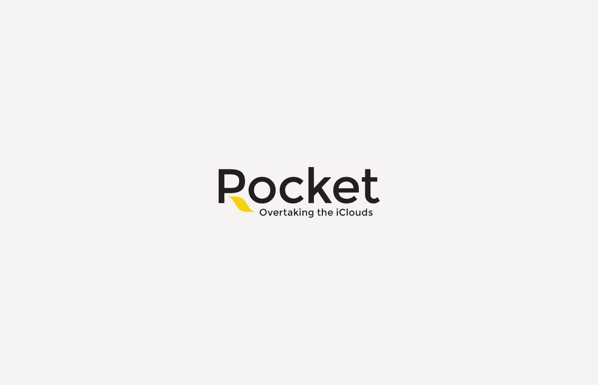
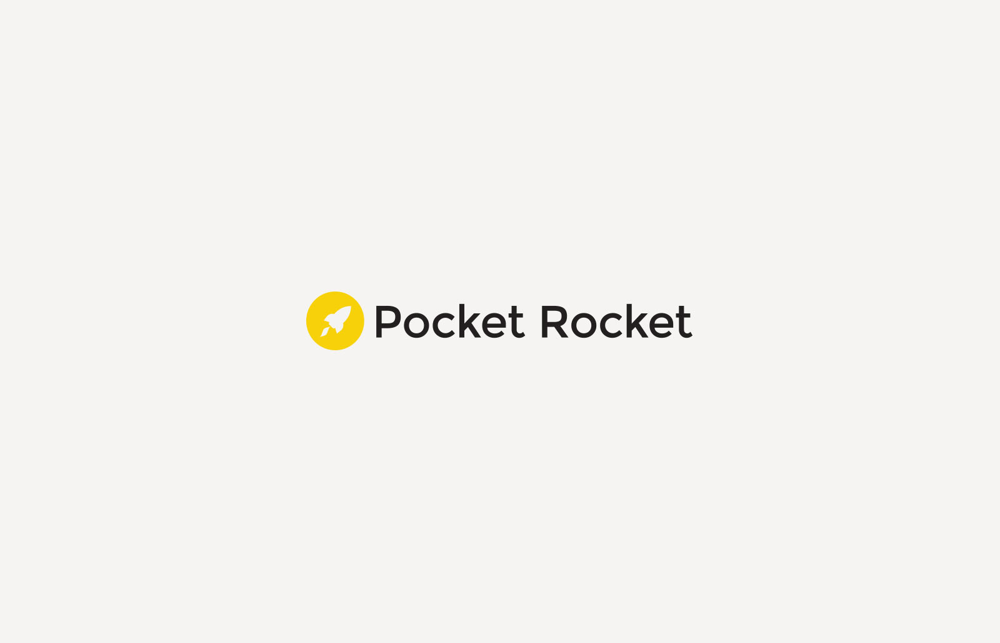
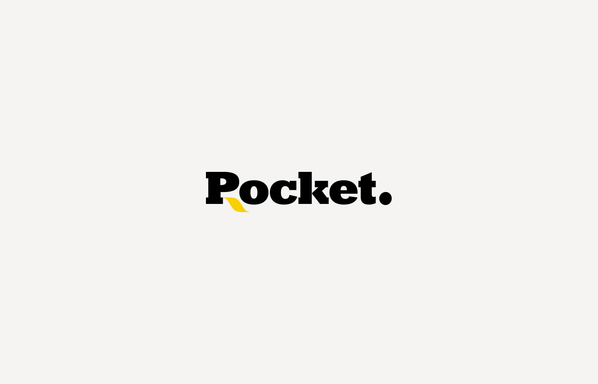

It's time to create applications—in the summer of 2013, I decided to team up with two front and back-end developers and expand the designer's competence to a full cycle of mobile development.
This is how the Pocket Rocket brand was born. Pocket is for mobile phone; Rocket—always new heights!
The logo is as simple and elegant as possible: two words differ only in the capital letter—this is the basis for the sign—a symbol of a flame from a rocket nozzle.
2015 version

Version 2014

And this is how it all began—2013

Inside the company, we say "Proket"—it's easier and more convenient.
And of course the slogan—Overtaking the iClouds .